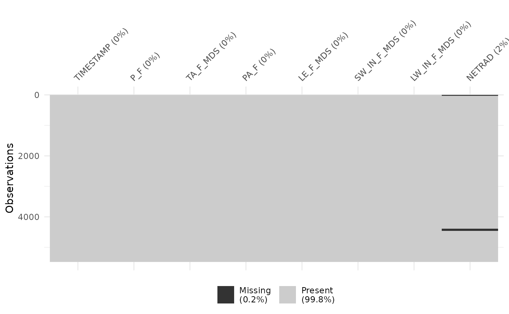
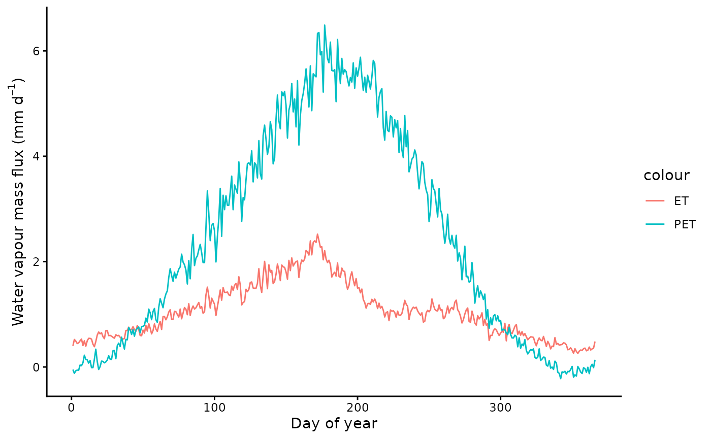
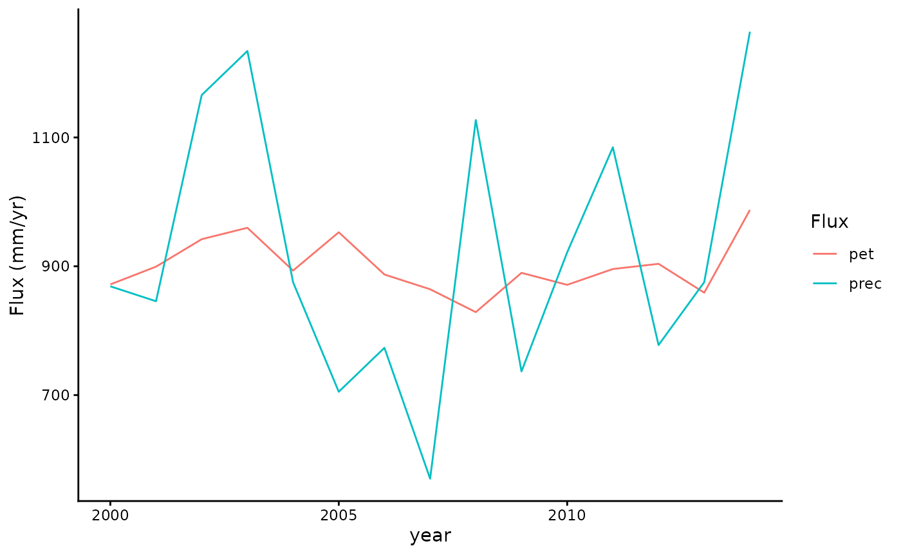
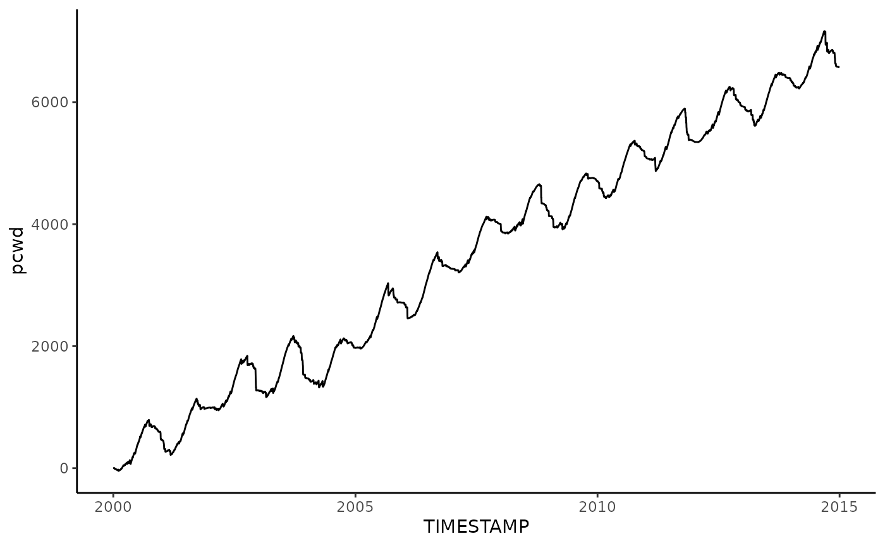
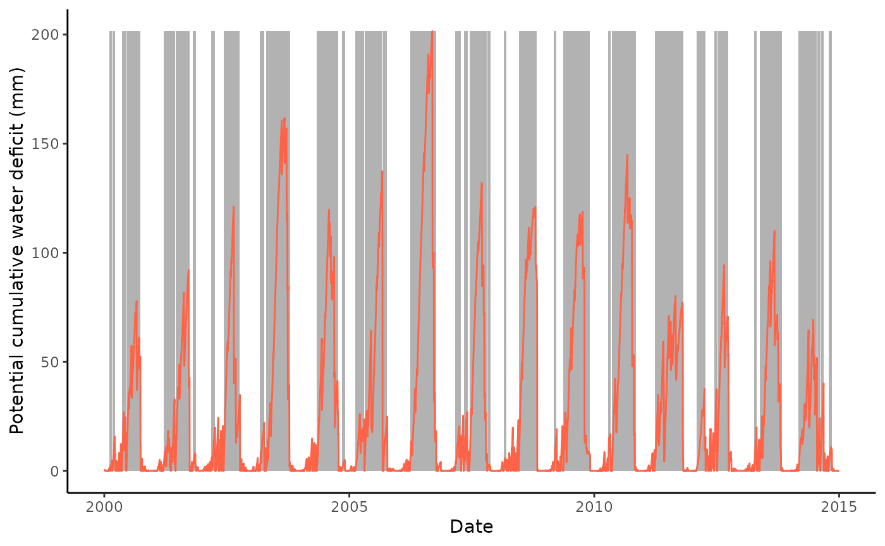

Potential cumulative water deficit
Beni Stocker
2024-05-13
Source:vignettes/potential_cwd.Rmd
potential_cwd.Rmd
library(readr)
library(dplyr)
library(tidyr)
library(here)
library(lubridate)
library(patchwork)
library(extRemes)
library(ggplot2)
library(cwd)
library(visdat)
library(recipes)A potential cumulative water deficit can be calculated using net radiation and the potential evapotranspiration (PET). Here, we calculate PET based on net radiation and the approach by Priestley & Taylor (1972) as implemented by Davis et al. (2017). Necessary functions are part of the {cwd} package.
Prepare data
Read data from the example FLUNXET file contained in this repository.

Some net radiation data is missing. Impute missing values by KNN.
pp <- recipes::recipe(
NETRAD ~ SW_IN_F_MDS + LW_IN_F_MDS + TA_F_MDS,
data = df |>
drop_na(SW_IN_F_MDS, LW_IN_F_MDS, TA_F_MDS)
) |>
recipes::step_center(
recipes::all_numeric(),
-recipes::all_outcomes()
) |>
recipes::step_scale(
recipes::all_numeric(),
-recipes::all_outcomes()
) |>
recipes::step_impute_knn(
recipes::all_outcomes(),
neighbors = 5
)
pp_prep <- recipes::prep(
pp,
training = df |>
drop_na(SW_IN_F_MDS, LW_IN_F_MDS, TA_F_MDS)
)
df_baked <- recipes::bake(
pp_prep,
new_data = df
)
# fill missing with gap-filled
df <- df |>
dplyr::bind_cols(
df_baked |>
dplyr::select(
NETRAD_filled = NETRAD)
) |>
dplyr::mutate(
NETRAD = ifelse(is.na(NETRAD), NETRAD_filled, NETRAD)
#qc = ifelse(is.na(netrad), TRUE, FALSE)
) |>
dplyr::select(
-NETRAD_filled
)
visdat::vis_miss(df)Visualise, contrasting to observed ET after conversion of energy to mass units
Convert latent heat flux (W/m2) to evapotranspiration in mass units (mm/d).
# tested: identical results are obtained with:
# bigleaf::LE.to.ET(LE_F_MDS, TA_F_MDS)* 30 * 30 * 24
le_to_et <- function(le, tc, patm){
1000 * 30 * 30 * 24 * le / (cwd::calc_enthalpy_vap(tc) * cwd::calc_density_h2o(tc, patm))
}
df <- df |>
mutate(et = le_to_et(LE_F_MDS, TA_F_MDS, PA_F))Plot mean seasonal cycle.
df |>
mutate(doy = lubridate::yday(TIMESTAMP)) |>
group_by(doy) |>
summarise(
et = mean(et),
pet = mean(pet)
) |>
ggplot() +
geom_line(aes(doy, et, color = "ET")) +
geom_line(aes(doy, pet, color = "PET")) +
labs(
x = "Day of year",
y = expression(paste("Water vapour mass flux (mm d"^-1, ")"))
) +
theme_classic() ## Cumulating PET - P
Check annual totals.
adf <- df |>
mutate(year = year(TIMESTAMP)) |>
group_by(year) |>
summarise(pet = sum(pet), prec = sum(P_F))
adf |>
tidyr::pivot_longer(cols = c(pet, prec), names_to = "Flux") |>
ggplot(aes(x = year, y = value, color = Flux)) +
geom_line() +
labs(y = "Flux (mm/yr)") +
theme_classic()
In some cases, the mean annual PET may be larger than the mean annual precipitation (P), leading to a steady long-term increase of a potential cumulative water deficit. This is not the case here (see plot above). For demonstration, let’s assume precipitation was 30% of its actual value and calculate the running sum of (PET - P) - the cumulative potential evapotranspiration.
df |>
mutate(P_F = 0.3 * P_F) |>
mutate(pcwd = cumsum(pet - P_F)) |>
ggplot(aes(TIMESTAMP, pcwd)) +
geom_line() +
theme_classic()
This indicates a need to re-set the potential cumulative water deficit calculation. Let’s determine the wettest month from the available years of data and reset the cumulative water deficit each year in that month. The plot below shows the average P - PET for each month. November is the wettest month at this site.
mdf_mean <- df |>
mutate(month = lubridate::month(TIMESTAMP),
pwbal = P_F - pet) |>
group_by(month) |>
summarise(
pwbal = sum(pwbal)
)
mdf_mean |>
ggplot(aes(as.factor(month), pwbal)) +
geom_bar(stat = "identity") +
theme_classic()
Therefore, we re-set the cumulation of the water deficit each year in November.
# determine the day-of-year of the first day of the month after the wettest month
doy_reset <- lubridate::yday(lubridate::ymd("2000-11-01") + lubridate::dmonths(1))Get potential CWD and events.
df <- df |>
mutate(pwbal = P_F - pet)
out_cwd <- cwd(
df,
varname_wbal = "pwbal",
varname_date = "TIMESTAMP",
thresh_terminate = 0.0,
thresh_drop = 0.0,
doy_reset = doy_reset
)Retain only events of a minimum length of 20 days.
out_cwd$inst <- out_cwd$inst |>
filter(len >= 20)Plot CWD time series.
ggplot() +
geom_rect(
data = out_cwd$inst,
aes(xmin = date_start, xmax = date_end, ymin = 0, ymax = max( out_cwd$df$deficit)),
fill = rgb(0,0,0,0.3),
color = NA) +
geom_line(data = out_cwd$df, aes(TIMESTAMP, deficit), color = "tomato") +
theme_classic() +
ylim(0, max( out_cwd$df$deficit)) +
labs(
x = "Date",
y = "Potential cumulative water deficit (mm)"
)
References
Davis, T. W., Prentice, I. C., Stocker, B. D., Thomas, R. T., Whitley, R. J., Wang, H., Evans, B. J., Gallego-Sala, A. V., Sykes, M. T., & Cramer, W. (2017). Simple process-led algorithms for simulating habitats (SPLASH v.1.0): Robust indices of radiation, evapotranspiration and plant-available moisture. Geoscientific Model Development, 10(2), 689–708. https://doi.org/10.5194/gmd-10-689-2017
Priestley, C. H. B., & Taylor, R. J. (1972). On the Assessment of Surface Heat Flux and Evaporation Using Large-Scale Parameters. Monthly Weather Review, 100(2), 81–92. https://doi.org/10.1175/1520-0493(1972)100<0081:OTAOSH>2.3.CO;2